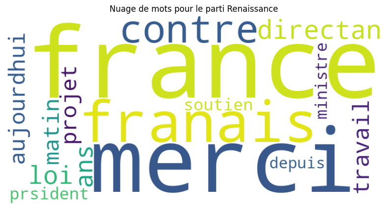

import pandas as pd
import numpy as np
import matplotlib.pyplot as plt
import seaborn as sns
from wordcloud import WordCloud
from collections import Counter
import reNico et Aurel
Dans ce notebook, nous présentons une analyse des tweets des différents députés français afin de comprendre leur dynamique et leur structure.
Chargement des librairies
Les librairies que nous utiliserons dans ce notebook sont :
On importe maintenant nos jeux de données
d1 = pd.read_excel("Data/Tweet/data_tweet.xlsx")
d2 = pd.read_excel("Data/Tweet/data_retweet.xlsx")
df2 = pd.read_excel("Data/Tweet/depute.xlsx")Puis on va concatener nos dataframe de tweets et de retweets en un seul jeu de données. Ici il s’agit d’une simple supperposition des deux jeux de données.
df1 = pd.concat([d1, d2], axis=0)
# Pour éviter qu'à chaque fois on fasse des df.head(), on crée une fonction pour aller plus vite:
def h(d):
return d.head()
h(df1)| name | id | retweet | date_tweet | date_tweet_original | text | |
|---|---|---|---|---|---|---|
| 0 | @_didierparis | 1573960903082577920 | no | Sun Sep 25 09:01:36 +0000 2022 | NaN | Marie-Louise Fort a porté un engagement politi... |
| 1 | @_didierparis | 1248014208781790976 | no | Wed Apr 08 22:25:49 +0000 2020 | NaN | Face au #Covid19\nLe @gouvernementFR facilite ... |
| 2 | @_didierparis | 1248991409954225920 | no | Sat Apr 11 15:08:51 +0000 2020 | NaN | Ensemble, nous formons la #FranceUnie contre l... |
| 3 | @_didierparis | 1248010336503868928 | no | Wed Apr 08 22:10:25 +0000 2020 | NaN | Face au #Covid19\nAfin de faciliter le verseme... |
| 4 | @_didierparis | 1250310724410150912 | no | Wed Apr 15 06:31:21 +0000 2020 | NaN | üá´üá∑ üèõ #DirectAN #QAG üèõüá´üá∑\n« Il appartient au @g... |
Maintenant ce qu’on constate c’est que dans les identifiants utilisateurs (les @) des députés il y a des majuscules. On va tout mettre en miniscule pour faciliter notre analyse et éviter que la personne soit considérée comme autre entité du fait d’une majuscule dans son @
def col_low(var):
if pd.isna(var):
return var
else:
return var.lower()
df1['name'] = df1['name'].apply(col_low)
df2['Twitter'] = df2['Twitter'].apply(col_low)A présent, nous allons ajouter les noms et les parties politiques des députés dans le jeu de données df1.
Pour ce faire, on va récupérer les noms et les parti politiques associété dans df2, et les merge à df1 par rapport à leur id utilisatuers
df2_cop = df2[['Twitter', 'Nom', 'Parti']] # On récupère les infos dont on a besoin
df = pd.merge(df1, df2_cop, how='left', left_on='name', right_on='Twitter') # ET on merge les deux pour avoir un df final
h(df)
df.to_csv("df.csv", index = False, encoding='utf8')Gestion des valeurs manquantes
Ici on constate qu’il y a 4.7% de valeurs manquantes dans les partis politiques. Pour simplifier notre exploration, elles seront supprimées
df.isna().mean() * 100name 0.000000
id 0.000000
retweet 0.000000
date_tweet 0.000000
date_tweet_original 52.146428
text 0.001904
Twitter 0.000000
Nom 0.000000
Parti 4.747725
dtype: float64df.dropna(subset=['Parti'], inplace=True)
df.drop(columns=['Twitter'], inplace=True) # On supprimer cette colonne car on en a plus besoinEnsuite on va créer une variable ‘month’ qui va contenir nos dates au format ‘mois-année’ (type : string). Cela permettra par la suite de grouper les obervations par mois
df['month'] = pd.to_datetime(df['date_tweet']).dt.strftime('%b-%Y')
h(df)C:\Users\aurel\AppData\Local\Temp\ipykernel_33356\2450480701.py:1: UserWarning: Could not infer format, so each element will be parsed individually, falling back to `dateutil`. To ensure parsing is consistent and as-expected, please specify a format.
df['month'] = pd.to_datetime(df['date_tweet']).dt.strftime('%b-%Y')| name | id | retweet | date_tweet | date_tweet_original | text | Nom | Parti | month | |
|---|---|---|---|---|---|---|---|---|---|
| 0 | @_didierparis | 1573960903082577920 | no | Sun Sep 25 09:01:36 +0000 2022 | NaN | Marie-Louise Fort a porté un engagement politi... | m. didier paris | Renaissance | Sep-2022 |
| 1 | @_didierparis | 1248014208781790976 | no | Wed Apr 08 22:25:49 +0000 2020 | NaN | Face au #Covid19\nLe @gouvernementFR facilite ... | m. didier paris | Renaissance | Apr-2020 |
| 2 | @_didierparis | 1248991409954225920 | no | Sat Apr 11 15:08:51 +0000 2020 | NaN | Ensemble, nous formons la #FranceUnie contre l... | m. didier paris | Renaissance | Apr-2020 |
| 3 | @_didierparis | 1248010336503868928 | no | Wed Apr 08 22:10:25 +0000 2020 | NaN | Face au #Covid19\nAfin de faciliter le verseme... | m. didier paris | Renaissance | Apr-2020 |
| 4 | @_didierparis | 1250310724410150912 | no | Wed Apr 15 06:31:21 +0000 2020 | NaN | üá´üá∑ üèõ #DirectAN #QAG üèõüá´üá∑\n« Il appartient au @g... | m. didier paris | Renaissance | Apr-2020 |
Nombre de tweets par partis politiques par mois
Pour ce faire nous allons présenter 2 graphiques :
- Un graph pour les tweets
- Un graph pour les retweets
Dans un premier temps on va grouper les twweets (ou retweets) par mois et par parti politiques pour avoir leur nombre
retw = df[df['retweet']=='yes'].groupby(['month', 'Parti']).size().reset_index(name='retweets') # retweets
tw = df[df['retweet']=='no'].groupby(['month', 'Parti']).size().reset_index(name='tweets') # tweetsOn obtient deux dataframes dans lesquels on a la date, le parti et nombre de tweets/retweets qu’il a posté
h(retw)| month | Parti | retweets | |
|---|---|---|---|
| 0 | Apr-2011 | Démocrate (MoDem et Indépendants) | 1 |
| 1 | Apr-2011 | Renaissance | 5 |
| 2 | Apr-2012 | Démocrate (MoDem et Indépendants) | 2 |
| 3 | Apr-2012 | La France insoumise - Nouvelle Union Populaire... | 16 |
| 4 | Apr-2012 | Les Républicains | 78 |
h(tw)| month | Parti | tweets | |
|---|---|---|---|
| 0 | Apr-2010 | Les Républicains | 1 |
| 1 | Apr-2010 | Renaissance | 6 |
| 2 | Apr-2011 | Démocrate (MoDem et Indépendants) | 11 |
| 3 | Apr-2011 | Les Républicains | 12 |
| 4 | Apr-2011 | Renaissance | 18 |
Les retweets
D’abord, nous pivotons cette table afin d’avoir les partis en colonnes (chaque parti devient une variable) et avoir pour chaque mois, en ligne, le nombre de tweets.
Ensuite on convertis nos mois en date et trie notre dataframe en fonction des mois (pour qu’il aille du plus ancien eau plus récent)
Enfin pour avoir les noms des mois sur nos axes x, on change le formattage de nos date pour une format : ‘mois-année’
retw = retw.pivot(index='month', columns='Parti', values='retweets')
retw.index = pd.to_datetime(retw.index, format='%b-%Y')
retw = retw.sort_index()
retw.index = retw.index.strftime('%b-%Y')
h(retw)| Parti | Démocrate (MoDem et Indépendants) | Gauche démocrate et républicaine - NUPES | Horizons et apparentés | La France insoumise - Nouvelle Union Populaire écologique et sociale | Les Républicains | Libertés, Indépendants, Outre-mer et Territoires | Non inscrit | Rassemblement National | Renaissance | Socialistes et apparentés (membre de l’intergroupe NUPES) | Écologiste - NUPES |
|---|---|---|---|---|---|---|---|---|---|---|---|
| month | |||||||||||
| Mar-2010 | NaN | NaN | NaN | NaN | NaN | NaN | NaN | NaN | NaN | 1.0 | NaN |
| Jul-2010 | NaN | NaN | NaN | NaN | 2.0 | NaN | NaN | NaN | NaN | NaN | NaN |
| Sep-2010 | NaN | NaN | NaN | NaN | 2.0 | NaN | NaN | NaN | NaN | NaN | NaN |
| Oct-2010 | NaN | NaN | NaN | NaN | NaN | NaN | NaN | NaN | 3.0 | NaN | NaN |
| Nov-2010 | NaN | NaN | NaN | NaN | 6.0 | NaN | NaN | NaN | 9.0 | NaN | NaN |
Et on représente maintenant le nombre de retweets posté par parti politique au fil du temps
retw.plot(kind='bar', stacked=True, figsize=(18, 10))
sns.reset_orig()
plt.xticks(ticks=range(0, len(retw.index), 5), labels=retw.index[::5], rotation=45, ha='right') # ici on veut afficher les mois selon un intervalle de 5 sur l'axe des x (temps)
plt.xlabel('Mois', fontsize=10)
plt.ylabel('Nombre de Retweets', fontsize=12)
plt.title('Nombre de Retweets par Parti par mois', fontsize=14, fontweight='bold')
plt.legend(title='Parti Politique', bbox_to_anchor=(0.5, -0.2), loc='upper center', ncol=3)
plt.tight_layout()
plt.show()Les tweets
De même que pour les retweets on représente les tweets
tw = tw.pivot(index='month', columns='Parti', values='tweets')
tw.index = pd.to_datetime(tw.index, format='%b-%Y')
tw = tw.sort_index()
tw.index = tw.index.strftime('%b-%Y')
h(tw)| Parti | Démocrate (MoDem et Indépendants) | Gauche démocrate et républicaine - NUPES | Horizons et apparentés | La France insoumise - Nouvelle Union Populaire écologique et sociale | Les Républicains | Libertés, Indépendants, Outre-mer et Territoires | Non inscrit | Rassemblement National | Renaissance | Socialistes et apparentés (membre de l’intergroupe NUPES) | Écologiste - NUPES |
|---|---|---|---|---|---|---|---|---|---|---|---|
| month | |||||||||||
| Dec-2009 | 1.0 | NaN | NaN | NaN | NaN | NaN | NaN | NaN | 3.0 | 1.0 | NaN |
| Jan-2010 | 22.0 | NaN | NaN | NaN | NaN | NaN | NaN | NaN | 5.0 | 1.0 | NaN |
| Feb-2010 | 37.0 | NaN | NaN | NaN | NaN | NaN | NaN | NaN | 5.0 | 7.0 | NaN |
| Mar-2010 | 13.0 | NaN | NaN | NaN | 1.0 | 1.0 | NaN | NaN | 4.0 | 9.0 | NaN |
| Apr-2010 | NaN | NaN | NaN | NaN | 1.0 | NaN | NaN | NaN | 6.0 | NaN | NaN |
tw.plot(kind='bar', stacked=True, figsize=(18, 10))
sns.reset_orig()
plt.xticks(ticks=range(0, len(tw.index), 5), labels=tw.index[::5], rotation=45, ha='right')
plt.xlabel('Mois', fontsize=10)
plt.ylabel('Nombre de Tweets', fontsize=12)
plt.title('Nombre de Tweets par Parti par mois', fontsize=14, fontweight='bold')
plt.legend(title='Parti Politique', bbox_to_anchor=(0.5, -0.2), loc='upper center', ncol=3)
plt.tight_layout()
plt.show()Evolution du nombre de tweets et retweets (additionnel)
Ici nous présentons une bref analyse de l’impact du temps sur le nombre de tweets et de retweets par mois
D’emblée, on recupère le nombre de tweet-retweets posté par chaque parti durant chaque mois, qu’on représente ensuite à l’aide d’une courbe d’évolution
b = df.groupby('month')['Parti'].size()
b = b.reset_index()
b.columns = ['month', 'n']
b['month'] = pd.to_datetime(b['month'])
b = b.sort_values(by='month')
b['month'] = b['month'].dt.strftime('%b-%Y')C:\Users\aurel\AppData\Local\Temp\ipykernel_33356\2190219378.py:4: UserWarning: Could not infer format, so each element will be parsed individually, falling back to `dateutil`. To ensure parsing is consistent and as-expected, please specify a format.
b['month'] = pd.to_datetime(b['month'])sns.set_theme(style="darkgrid")
plt.figure(figsize=(12, 6))
plt.plot(b['month'], b['n'], linestyle='-', color='blue')
plt.title("Évolution du Nombre de Tweets au fil du temps")
plt.xticks(ticks=range(0, len(b.index), 5), labels=b['month'][::5], rotation=45, ha='right')
plt.xlabel("Temps")
plt.ylabel("Nombre de tweets + retweets")
plt.grid()
plt.tight_layout()
plt.grid()
plt.show()La courbe montre une nette augmentation du nombre de tweets et retweets au fil du temps, avec un fort pic après 2020.
Jusqu’en nov 2015, l’activité sur Twitter reste faible, avec des variations mineures. À partir de 2018, on observe une tendance à la hausse plus marquée. Cela montre un intérêt croissant pour le réseau social. La montée rapide après 2020 pourrait être liée à un événement majeur (élection, débats parlementaires…) ou à une tendance sociale accrue vers l’utilisation de Twitter (crises sociales, rentrées parlementaires…).
Enfin, à partir de 2018, on observe un certain rythme cyclique dans l’évolution de cette courbe.
Pour modéliser la relation entre le temps et le nombre de tweets des partis politiques on utilise une simple linear reg:
b['t'] = np.arange(1, len(b) + 1) # On crée une variable qui va representer le temps
h(b)| month | n | t | |
|---|---|---|---|
| 27 | Dec-2009 | 5 | 1 |
| 55 | Jan-2010 | 28 | 2 |
| 41 | Feb-2010 | 49 | 3 |
| 95 | Mar-2010 | 29 | 4 |
| 0 | Apr-2010 | 7 | 5 |
La forme de cette courbe suggère une loi de puissance du type n = t^a, où le nombre de tweets n pourrait être proportionnel à une puissance du temps t. En observant la croissance des tweets des députés français, une loi de puissance permettrait de capturer la dynamique sous-jacente de leur activité en ligne au fil du temps.
Pour modéliser cette relation, nous ferons une régression sur les données transformées en logarithme, ce qui simplifie l’ajustement et facilite l’estimation de l’exposant a.
En prenant le logarithme des deux côtés de l’équation n = t^a, nous obtenons une forme linéaire :
log(n) = constante + a * log(t)
Le paramètre a représente le rythme de croissance et, en interprétant sa valeur, nous pourrons mieux comprendre l’évolution de l’activité des députés sur Twitter.
from sklearn.linear_model import LinearRegression
b['log_n'] = np.log(b['n']) # On convertis le nombre de tweets en log pour réduire l'amplitude des variations
b['log_t'] = np.log(b['t'])
# Et on effectue notre régression :
model = LinearRegression()
model.fit(b[['log_t']], b['log_n'])
alpha = model.coef_[0]
constante = model.intercept_
# On peut plot notre régression
b['log_n_pred'] = model.predict(b[['log_t']])
plt.figure(figsize=(12, 6))
plt.scatter(b['log_t'], b['log_n'], label='vraies val')
plt.plot(b['log_t'], b['log_n_pred'], color='red', label=f'Model: ln(n) = {constante:.2f} + {alpha:.2f}.ln(t)')
plt.xlabel('ln(t)')
plt.ylabel('ln(n)')
plt.legend()
plt.title('Linear reg')
plt.grid(color='white')
plt.show()
print(f"""
==========================================
Linear Reg ln(n) = constante + alpha.ln(t)
==========================================
constante = {constante:.2f} \n alpha = {alpha:.2f}
""")
==========================================
Linear Reg ln(n) = constante + alpha.ln(t)
==========================================
constante = -1.36
alpha = 2.19
Interpretation : Chaque augmentation de 1 % du temps (en log) entraîne une augmentation de 2.19 % du nombre de tweets.
Cette relation suggère une croissance rapide, presque exponentielle, du nombre de tweets des députés au fil du temps
Les disparités dans les tweets au sein des partis politiques
Dans cette partie nous allons analyser les diparités qu’on peut trouver au sein des tweets des différents parties politiques. Pour cela nous présenterons 4 graphiques clés :
La moyenne de tweet pour un députés au sein d’un parti
La dispersion des tweets par partis politiques
L’intervalle de temps moyen entre chaque tweet au sein d’un parti
La distribution de la part des retweets dans les posts (tweets + retweets) par partis politiques
Dans un premier temps on calcule les éléments qui vont nous permettre de réaliser cett tâche : la moyenne des tweets par député, la dispersion des tweets par parti, l’intervalle de temps moyen entre chaque tweet et le nombre de tweet/retweet par parti
# Moyenne de tweets par député
tweets_per_depute = df.groupby('Parti').size() / df.groupby('Parti')['Nom'].nunique()
# Dispersion des tweets (nombre de tweets par partis)
tweets_dispersion = df.groupby('Parti').size().std()
# Intervalle de temps entre les tweets
df['date_tweet'] = pd.to_datetime(df['date_tweet']) # On convertis la colonne des date au format datetime
df = df.sort_values(by='date_tweet') # On trie par ordre chronologique
df['time_diff'] = df.groupby('Parti')['date_tweet'].diff().dt.seconds # On calcule la différence en secondes entre chaque tweet et le tweet précédent
time_interval = df.groupby('Parti')['time_diff'].mean() # Et enfin on fais la moyenne de ces differences
# Nombre de tweets et retweets
tweets_count = df[df['retweet'] == 'yes'].groupby('Parti').size()
retweets_count = df[df['retweet'] == 'no'].groupby('Parti').size()
rapport = retweets_count/(tweets_count + retweets_count) # on calcul ensuite la part des retweets dans le global (tweets + retweets)
rapport = rapport.sort_values(ascending=False)
h(rapport) # 5 plus grandes de reweets dans les postsC:\Users\aurel\AppData\Local\Temp\ipykernel_33356\3906370631.py:8: UserWarning: Could not infer format, so each element will be parsed individually, falling back to `dateutil`. To ensure parsing is consistent and as-expected, please specify a format.
df['date_tweet'] = pd.to_datetime(df['date_tweet']) # On convertis la colonne des date au format datetimeParti
Gauche démocrate et républicaine - NUPES 0.654285
Non inscrit 0.615071
Libertés, Indépendants, Outre-mer et Territoires 0.610099
Les Républicains 0.591730
La France insoumise - Nouvelle Union Populaire écologique et sociale 0.569040
dtype: float64Passons maintenant à la représentation graphique des éléments calculés.
D’abord pour légender notre graphique nous aurons besoin des noms des differents partis politiques :
partis = sorted(df['Parti'].unique())
for p in partis:
print(p)Démocrate (MoDem et Indépendants)
Gauche démocrate et républicaine - NUPES
Horizons et apparentés
La France insoumise - Nouvelle Union Populaire écologique et sociale
Les Républicains
Libertés, Indépendants, Outre-mer et Territoires
Non inscrit
Rassemblement National
Renaissance
Socialistes et apparentés (membre de l’intergroupe NUPES)
Écologiste - NUPESparti_colors = {
'Démocrate (MoDem et Indépendants)': '#1f77b4',
'Gauche démocrate et républicaine - NUPES': '#ff7f0e',
'Horizons et apparentés': '#2ca02c',
'La France insoumise - Nouvelle Union Populaire écologique et sociale': '#d62728',
'Libertés, Indépendants, Outre-mer et Territoires': '#9467bd',
'Les Républicains': '#8c564b',
'Non inscrit': '#e377c2',
'Rassemblement National': '#7f7f7f',
'Renaissance': '#bcbd22',
'Socialistes et apparentés (membre de l’intergroupe NUPES)': '#17becf',
'Écologiste - NUPES': '#e41a1c'
}
# Création des sous-graphiques
sns.set_theme(style="darkgrid")
fig, axs = plt.subplots(2, 2, figsize=(18, 12))
# Moyenne de tweets par député
sns.barplot(x=tweets_per_depute.index, y=tweets_per_depute.values, ax=axs[0, 0], palette=parti_colors)
axs[0, 0].set_title('Moyenne de Tweets par Député')
axs[0, 0].set_xticklabels([])
axs[0, 0].set_xlabel('Parti')
axs[0, 0].set_ylabel('Moyenne de Tweets')
# Courbe de densité des tweets
for parti in df['Parti'].unique():
sns.kdeplot(df[df['Parti'] == parti]['date_tweet'].dt.dayofyear, ax=axs[0, 1], label=parti, color=parti_colors.get(parti))
axs[0, 1].set_title('Courbe de Densité des Tweets')
axs[0, 1].set_xlabel('Jour de l\'année')
axs[0, 1].set_ylabel('Densité')
axs[0, 1].grid(True)
# Intervalle de temps entre les tweets
sns.barplot(x=time_interval.index, y=time_interval.values, ax=axs[1, 0], palette=parti_colors)
axs[1, 0].set_title('Intervalle de Temps (en secondes) entre les Tweets')
axs[1, 0].set_xlabel('Parti')
axs[1, 0].set_xticks([])
axs[1, 0].set_ylabel('Intervalle de Temps (jours)')
# Rapport entre le nombre de tweets et retweets
sns.barplot(x=rapport.index, y=rapport.values, ax=axs[1, 1], palette=parti_colors, width=0.5)
axs[1, 1].set_title('Part des retweets dans les Tweets par parti politique')
axs[1, 1].set_xlabel('Parti')
axs[1, 1].set_ylabel('Nombre')
axs[1, 1].set_xticklabels([])
axs[1, 1].grid(True)
# Trier les handles et labels dans l'ordre alphabétique
handles, labels = axs[0, 1].get_legend_handles_labels()
sorted_handles_labels = sorted(zip(labels, handles), key=lambda x: x[0])
sorted_labels, sorted_handles = zip(*sorted_handles_labels)
fig.legend(sorted_handles, sorted_labels, loc='upper center', bbox_to_anchor=(0.5, -0.05), ncol=4, markerscale=2, fontsize='medium')
plt.tight_layout(rect=[0, 0.03, 1, 0.95])
plt.tight_layout()
plt.show()C:\Users\aurel\AppData\Local\Temp\ipykernel_33356\2339141941.py:20: FutureWarning:
Passing `palette` without assigning `hue` is deprecated and will be removed in v0.14.0. Assign the `x` variable to `hue` and set `legend=False` for the same effect.
sns.barplot(x=tweets_per_depute.index, y=tweets_per_depute.values, ax=axs[0, 0], palette=parti_colors)
C:\Users\aurel\AppData\Local\Temp\ipykernel_33356\2339141941.py:35: FutureWarning:
Passing `palette` without assigning `hue` is deprecated and will be removed in v0.14.0. Assign the `x` variable to `hue` and set `legend=False` for the same effect.
sns.barplot(x=time_interval.index, y=time_interval.values, ax=axs[1, 0], palette=parti_colors)
C:\Users\aurel\AppData\Local\Temp\ipykernel_33356\2339141941.py:42: FutureWarning:
Passing `palette` without assigning `hue` is deprecated and will be removed in v0.14.0. Assign the `x` variable to `hue` and set `legend=False` for the same effect.
sns.barplot(x=rapport.index, y=rapport.values, ax=axs[1, 1], palette=parti_colors, width=0.5)Analyse du champ lexical des partis politiques
Ici, nous allons d’abord importer les données fusionnées (tweets et retweets)
df = pd.read_csv("df.csv")
h(df)C:\Users\aurel\AppData\Local\Temp\ipykernel_26676\3174425095.py:1: DtypeWarning: Columns (4) have mixed types. Specify dtype option on import or set low_memory=False.
df = pd.read_csv("df.csv")| name | id | retweet | date_tweet | date_tweet_original | text | Nom | Parti | ||
|---|---|---|---|---|---|---|---|---|---|
| 0 | @_didierparis | 1573960903082577920 | no | Sun Sep 25 09:01:36 +0000 2022 | NaN | Marie-Louise Fort a porté un engagement politi... | @_didierparis | m. didier paris | Renaissance |
| 1 | @_didierparis | 1248014208781790976 | no | Wed Apr 08 22:25:49 +0000 2020 | NaN | Face au #Covid19\nLe @gouvernementFR facilite ... | @_didierparis | m. didier paris | Renaissance |
| 2 | @_didierparis | 1248991409954225920 | no | Sat Apr 11 15:08:51 +0000 2020 | NaN | Ensemble, nous formons la #FranceUnie contre l... | @_didierparis | m. didier paris | Renaissance |
| 3 | @_didierparis | 1248010336503868928 | no | Wed Apr 08 22:10:25 +0000 2020 | NaN | Face au #Covid19\nAfin de faciliter le verseme... | @_didierparis | m. didier paris | Renaissance |
| 4 | @_didierparis | 1250310724410150912 | no | Wed Apr 15 06:31:21 +0000 2020 | NaN | üá´üá∑ üèõ #DirectAN #QAG üèõüá´üá∑\n« Il appartient au @g... | @_didierparis | m. didier paris | Renaissance |
On commence d’abord par définir une liste de mots vides en français pour les filtrer. Ensuite, nous allons créer une fonction de prétraitement preprocess_text qui nettoiera le texte en supprimant les URLs, mentions, caractères spéciaux, mots vides et mots trop courts. Nous appliquerons cette fonction à chaque tweet. Par la suite, nous regrouperons les tweets par parti politique pour compter les mots les plus fréquents dans chaque groupe à l’aide de Counter.
alternative_stop_words = {
"l'", "le", "la", "les", "un", "une", "des", "et", "ou", "de", "du", "d'", "dans", "en", "par",
"pour", "sur", "avec", "sans", "ce", "cette", "ces", "je", "tu", "il", "elle", "nous",
"vous", "ils", "elles", "se", "s'", "mon", "ton", "son", "ma", "ta", "sa", "mes", "tes",
"ses", "notre", "votre", "leur", "leurs", "y", "a", "être", "avoir", "faire", "plus",
"moins", "tous", "tout", "toute", "toutes", "comme", "mais", "ou", "donc", "or", "ni",
"car", "bien", "aussi", "là", "autre", "autres", "avant", "après", "aujourd'hui",
"hier", "demain", "très", "peu", "encore", "déjà", "seulement",
"non", "oui", "on", "ça", "c'", "qui", "que", "quoi", "quand", "où", "comment", "pourquoi","au","est","pas","aux",
"ne","cest","nos","sont","ont","jai","si","nest","fait"
}def preprocess_text(text):
if not isinstance(text, str): # Vérifie que le texte est une chaîne
text = "" # Remplace les valeurs non-textuelles ou NaN par une chaîne vide
text = text.lower() # Conversion en minuscules
text = re.sub(r'http\S+|@\S+|[^a-z\s]', '', text) # Suppression des URL, mentions, caractères spéciaux
words = [word for word in text.split() if word not in alternative_stop_words and len(word) > 1]
return words
# Applique la fonction de prétraitement sur chaque tweet de manière sécurisée
df['processed_text'] = df['text'].apply(preprocess_text)
# Regroupement par parti et comptage des mots
party_lexical_counts = {
party: Counter([word for tweet_words in group['processed_text'] for word in tweet_words]).most_common(15)
for party, group in df.groupby('Parti')
}Enfin, nous générerons un nuage de mots (WordCloud) pour chaque parti, visualisant ainsi les mots les plus représentatifs de chaque parti politique et voila les résultats qu’on obtient :
for party, words in party_lexical_counts.items():
print(f"\nTop mots pour le parti {party}:")
column_width = 15
for word, count in words:
print(f"{word:<{column_width}} {count:<{column_width}}")
for party, words in party_lexical_counts.items():
wordcloud = WordCloud(width=800, height=400, background_color='white').generate_from_frequencies(dict(words))
plt.figure(figsize=(10, 5))
plt.imshow(wordcloud, interpolation='bilinear')
plt.axis('off')
plt.title(f'Nuage de mots pour le parti {party}')
plt.show()
Top mots pour le parti Démocrate (MoDem et Indépendants):
france 7540
merci 7187
contre 5376
ans 5362
directan 5036
loi 4892
aujourdhui 4882
franais 4189
matin 4073
trs 4014
ministre 3981
projet 3960
travail 3958
prsident 3920
depuis 3830
Top mots pour le parti Gauche démocrate et républicaine - NUPES:
directan 2738
contre 1694
france 1682
macron 1440
gouvernement 1382
retraites 1280
loi 1278
pcf 1159
ans 1065
rforme 1026
franais 1003
travail 1001
ministre 918
gauche 908
tre 897
Top mots pour le parti Horizons et apparentés:
merci 4786
france 4289
directan 2851
ans 2614
matin 2593
contre 2531
aujourdhui 2448
trs 2427
franais 2320
loi 2281
dun 2254
prsident 2156
soutien 2097
soir 2081
ministre 2025
Top mots pour le parti La France insoumise - Nouvelle Union Populaire écologique et sociale:
contre 21611
macron 17902
nupes 15854
ans 14695
france 14004
gouvernement 13810
directan 10211
lassemble 9665
merci 8800
retraites 8679
faut 8678
mme 8605
loi 8535
soutien 8422
aujourdhui 8349
Top mots pour le parti Les Républicains:
france 10685
merci 6870
directan 6773
franais 5908
politique 5216
prsident 4971
contre 4804
gouvernement 4671
trs 4669
ans 4387
soir 4240
tre 4191
soutien 4142
droite 3923
pays 3642
Top mots pour le parti Libertés, Indépendants, Outre-mer et Territoires:
directan 2353
di 2246
corse 1549
loi 1402
groupe 1248
contre 1242
france 1185
gouvernement 1145
territoires 968
ministre 962
qag 959
merci 906
in 893
trs 877
politique 868
Top mots pour le parti Non inscrit:
france 1561
franais 1305
gouvernement 1022
macron 925
contre 807
loi 676
directan 663
merci 580
ans 579
politique 543
tre 541
dun 525
pays 512
doit 485
toulouse 476
Top mots pour le parti Rassemblement National:
franais 30291
france 23857
macron 20282
marine 14931
contre 12394
gouvernement 11918
rn 11350
ans 9476
pen 9261
pays 9030
merci 8777
dputs 8703
politique 8577
nationale 8020
tre 7979
Top mots pour le parti Renaissance:
france 35264
merci 28512
franais 26221
contre 23346
directan 23152
loi 21407
ans 20004
travail 17958
aujourdhui 17119
projet 17089
matin 16812
prsident 16806
soutien 16709
ministre 16037
depuis 15546
Top mots pour le parti Socialistes et apparentés (membre de l’intergroupe NUPES):
merci 4543
contre 4455
loi 3995
gouvernement 3767
directan 3635
ans 3549
france 3394
gauche 3135
trs 2453
aujourdhui 2400
franais 2387
tre 2380
matin 2354
dune 2345
rforme 2344
Top mots pour le parti Écologiste - NUPES:
contre 5498
jadot 4901
france 4793
nupes 4520
merci 3875
gouvernement 3769
climat 3415
politique 3285
ans 3241
tre 3084
aujourdhui 2988
soutien 2965
faut 2855
climatique 2814
cologistes 2791 
